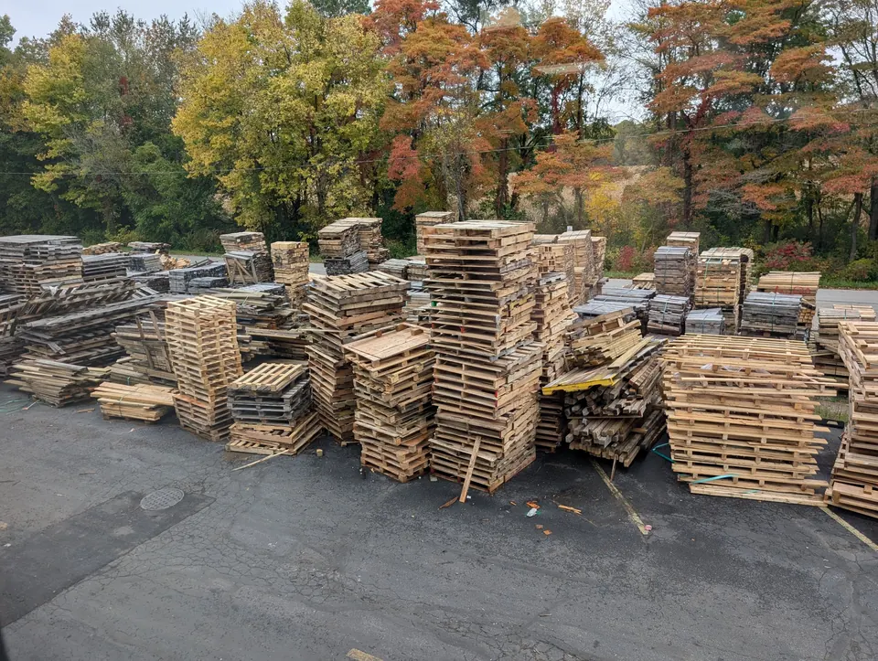

Recycled 48×40
The most common size, sorted and ready. Ideal for outbound loads that won't come back.
- Repaired as needed
- Stocked in volume
Reclaimed · Repaired · Ready
Inspected, sorted and repaired used pallets at a lower cost than new. A practical choice for one-way shipping, storage and any operation watching its packaging spend.

Recycled stockHow it works
Used pallets come in from local manufacturers and distributors, including free pickups from our customers.
Each pallet is sorted by size and condition. Odd sizes are set aside for customers who need them.
Broken deck boards and cracked stringers are replaced with reclaimed lumber.
Repaired pallets go back on the market. What can't be saved is ground into bedding and mulch.
Options
Many customers run recycled pallets for outbound freight and new pallets where appearance or strength matters. We can supply both.
The most common size, sorted and ready. Ideal for outbound loads that won't come back.
Used pallets in less common footprints, when we have them. Call for current inventory.
Send us your empties and buy repaired stock back. A simple way to cut both pallet cost and disposal cost.
FAQ
A recycled pallet is a used pallet that has been inspected, sorted and repaired as needed so it can go back into service. It costs less than a new pallet and keeps usable wood out of the landfill.
We sort used pallets by size and condition. Pallets that need work get broken boards replaced. Pallets that can't be repaired are dismantled for parts or ground into bedding and mulch.
For most warehouse and one-way shipping, yes. Tell us your load weight and how the pallet will be handled and we'll tell you whether recycled or new is the better fit.
Yes. We pick up reusable pallets for free. See our pallet and scrap removal page for how pickup works.
Keep exploring
Send us your size, quantity and delivery address. We'll quote new, recycled or custom and tell you what's in stock now.